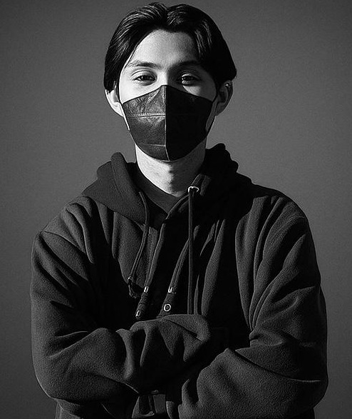

Available for opportunities
WEB MEETS
GROWTH.
Saya Pramudya—menggabungkan kode, desain, dan strategi digital untuk membangun produk yang bekerja sekaligus bertumbuh.
Tuban, Indonesia4+ tahun pengalamanID / EN

Current focus
Digital Product & Growth
Web Development ✦ SEO & SEM ✦ Digital Advertising ✦ UI Design ✦ Analytics ✦ WordPress ✦ Laravel ✦ Web Development ✦ SEO & SEM ✦ Digital Advertising ✦ UI Design ✦ Analytics ✦ WordPress ✦ Laravel ✦
01 Tentang saya
Teknis saat membangun.
Strategis saat bertumbuh.
Lulusan Teknik Informatika Universitas Brawijaya dan alumni Digital Marketing Bootcamp. Saya terbiasa mengembangkan website, membaca data, dan mengubah insight menjadi kampanye yang berdampak.
02 Selected works
Karya pilihan.
Produk digital dari ide, antarmuka, hingga pengalaman lintas perangkat.
03 Pengalaman
Perjalanan lintas pengembangan produk, periklanan, SEO, dan manajemen proyek.